Ferramentas simples e informações confiáveis para ajudar você a tomar melhores decisões todos os dias — sobre alimentação, saúde e rotina do seu cão ou gato.
Sem cadastro · Gratuito · Feito para tutores
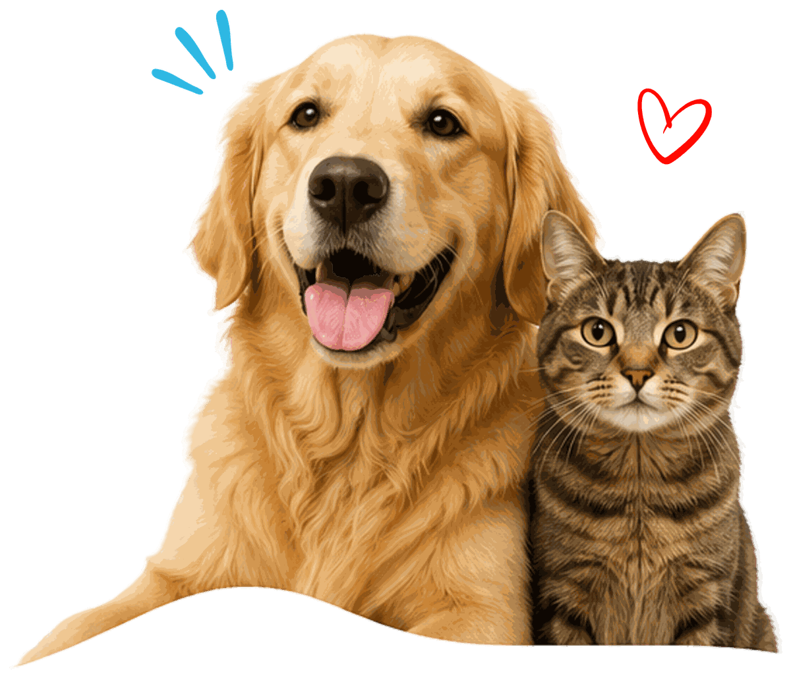
Respostas rápidas para algumas das dúvidas mais comuns de quem tem cão ou gato.
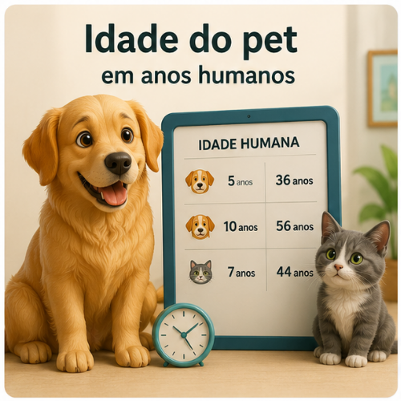
Descubra a idade real do seu cão ou gato considerando porte e espécie.
Calcular agora →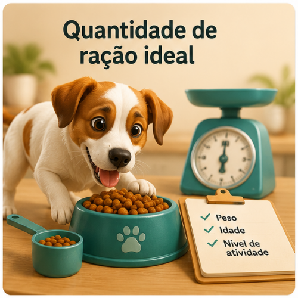
Calcule quanto ração dar por dia com base no peso e na fase de vida.
Calcular agora →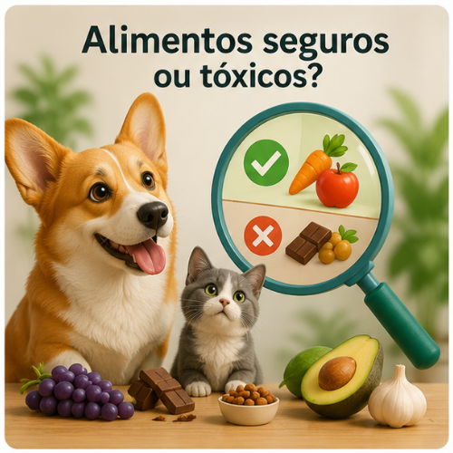
Consulte se um alimento humano é seguro ou perigoso para cães e gatos.
Consultar agora →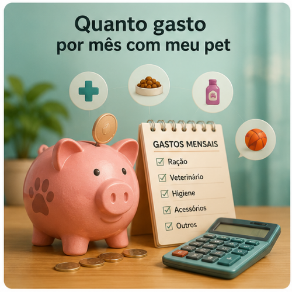
Some ração, higiene e veterinário para planejar o orçamento do seu pet.
Calcular agora →Dicas práticas e orientações para o dia a dia do seu cão ou gato.
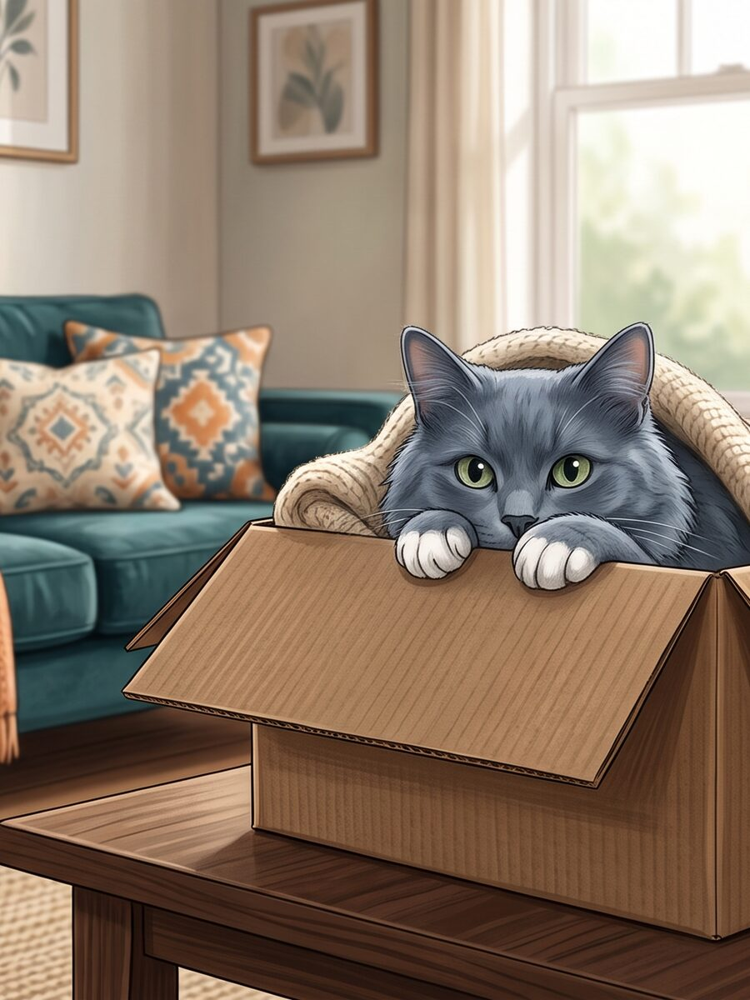
Meu gato está se escondendo mais que o normal
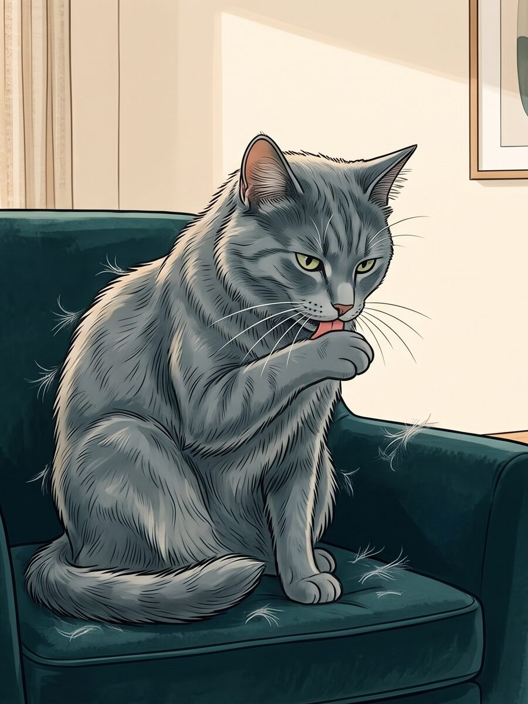
Meu gato vomita bola de pelo
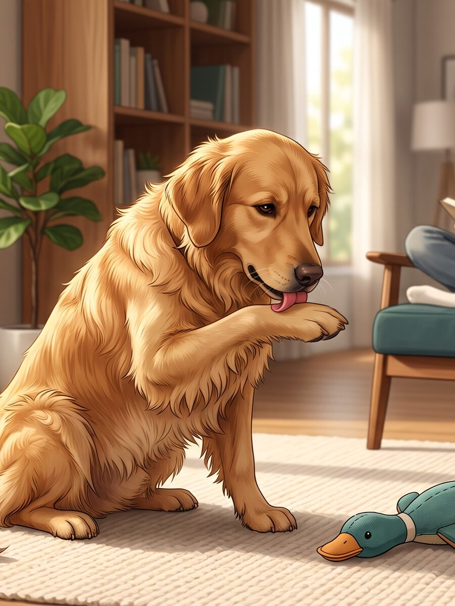
Meu cachorro lambe muito as patas
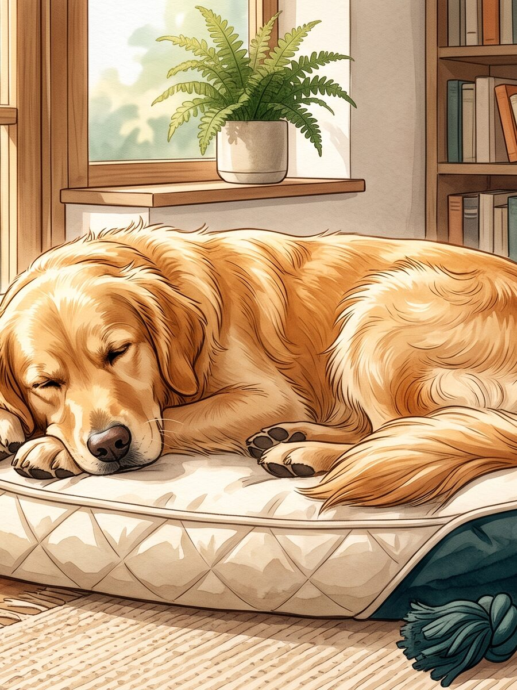
Meu cachorro dorme demais?
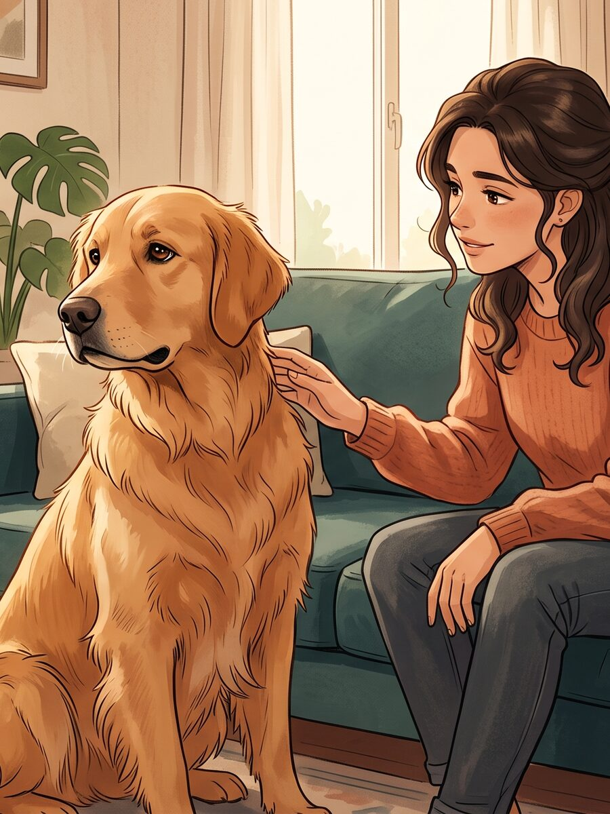
7 sinais de que seu cachorro está desconfortável
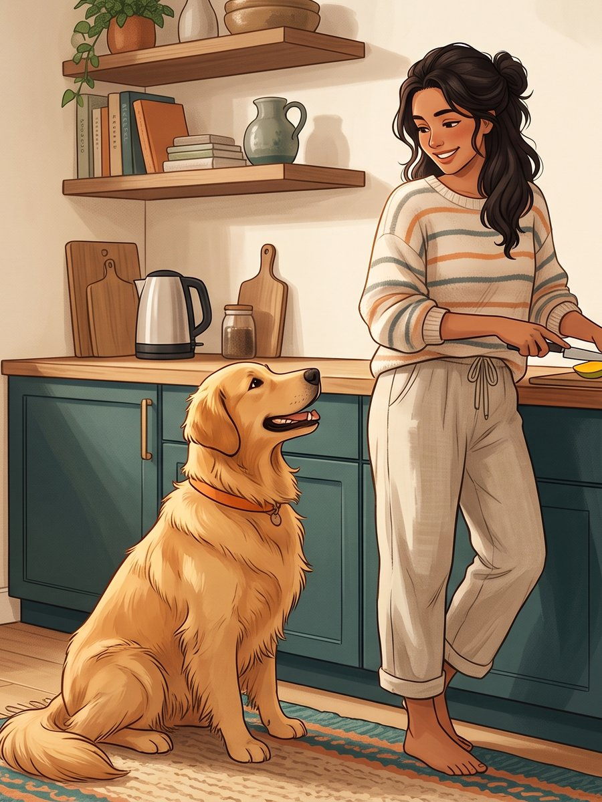
Apego ou ansiedade de separação?
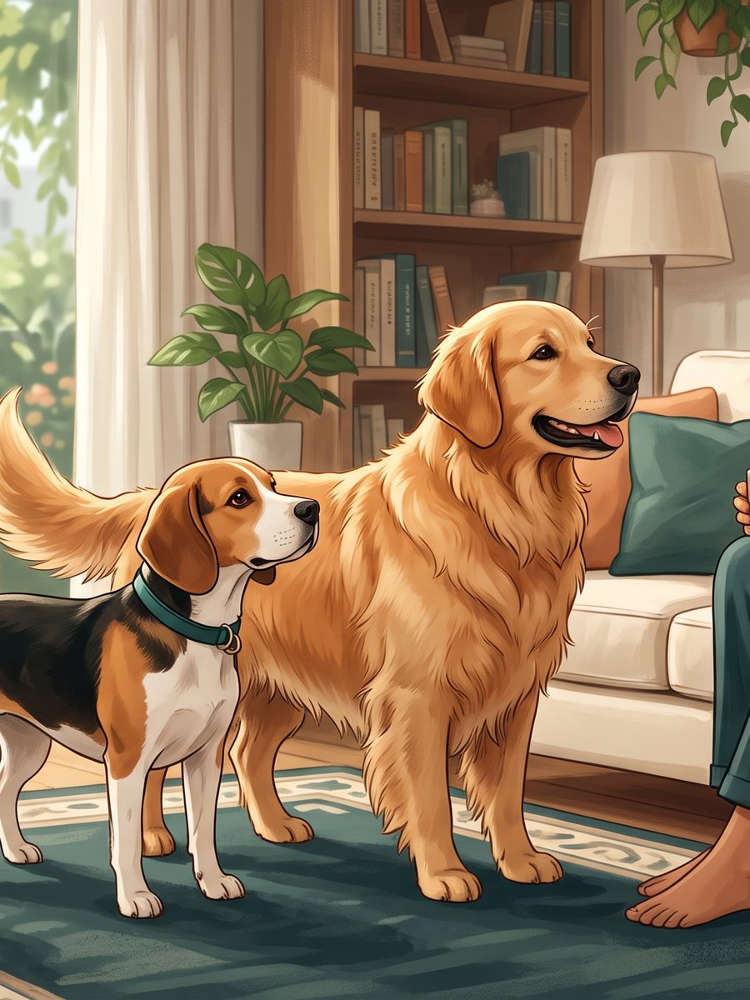
Quando o filhote deixa de ser filhote?
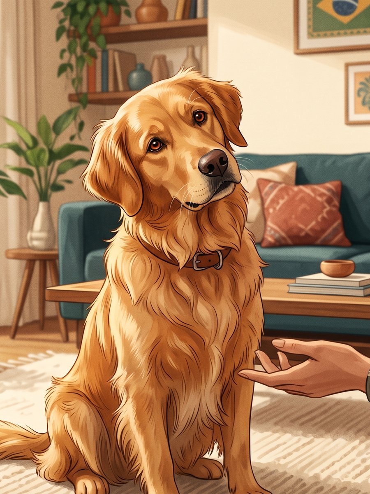
Por que meu cachorro inclina a cabeça?
Meu cachorro vomitou uma vez. É normal?
Quanto tempo vive um gato?
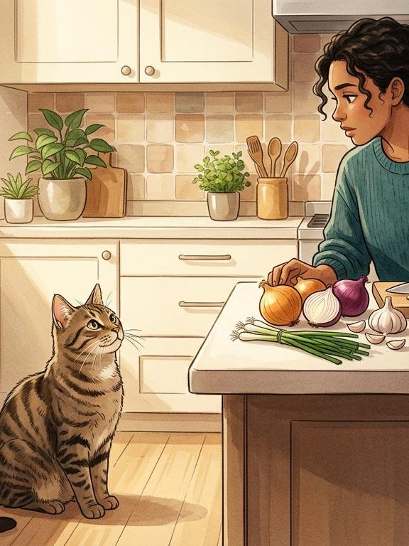
Quais alimentos são perigosos para gatos?
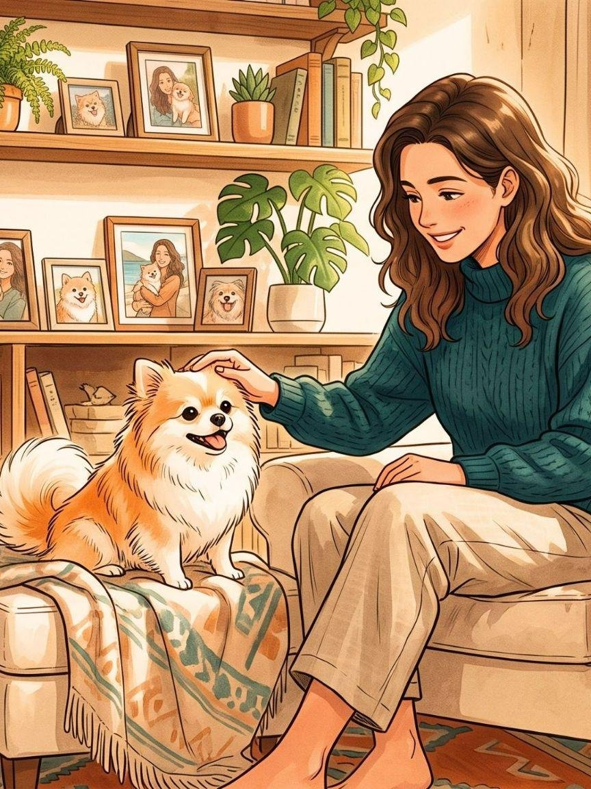
Quanto tempo vive um cachorro, por porte?